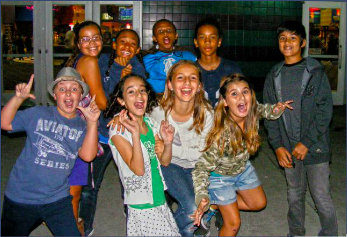

About Me
My name is Nia Isom and I grew up in Union City, California. I have 2 crazy cats, an always-laughing sister, and two supportive parents. My family has always been close to me, but since going to college – and moving 30,000+ miles away– my appreciation for them has grown immensely. Both my immediate and extended family are filled with confident, unapologetic women, who are my main role models. One of the most influential is my grandma, who came to America from Japan when she was in her 20’s and adopted my mother, her twin, and another daughter. My grandma’s religious beliefs, influential culture, and inherent independence has significantly affected how I view my purpose in life and my relationships with others. (Check out pictures of the two of us in the photo gallery!)
This is my family! (I am second from the left)

Growing Up
Both my parents are very active, so growing up we were always biking, running, or doing anything to soak up more sun. This meant that my sister and I were involved in various team sports, and we were convinced that our mom wanted us to try every sport under the sun – basketball, soccer, gymnastics, swimming, tennis, volleyball, track & field, cross country, even roller blading. The sport we ended up loving the most and sticking with through high school was soccer. Participating in team sports was an integral aspect of my upbringing, for they showed me the capability and importance of a team with a solid dynamic. Once I learned how to develop a solid group dynamic (through group projects, on sports teams, even with family) –and I’m still learning!– I had a different outlook on people. Because instead of seeing more people as a burden, I’ve learned how to capitalize on the strength in numbers. The Photo Gallery photos of sports teams and group projects that I’ve been a part of.
My first “Computer Class” –as we called it then– was in 4th grade when I took Microsoft Word, and we were in charge of creating a Weekly Newsletter. Our middle school also offered Photography, where we frequently used Adobe Dreamworks. I then took a Photoshop class, where our teacher would put up a YouTube Photoshop Tutorial on the projector and we would recreate a masterpiece every week. I also took Yearbook, where we edited ID photos using Lightroom, created ID templates using Photoshop, and edited the yearbook pages using various platforms. I also took an HTML class where we made a website and became familiar with other online platforms (check out my first Prezi from 7th grade). All in all, I spent a lot of time in the Computer Lab, which also doubled as the American Sign Language (ASL) classroom.

Where Am I Now?
Currently I’m studying Computer Engineering at Purdue University, where I’m surrounded by tons of driven students who keep me sane. This year I also became a chair member for the Society of Women in Engineering, allowing me to broaden my network and support other engineers. Outside of major-based activities, I work as a Resident Assistant (RA) in an all freshman dorm – which really solidified my title as the “Mom” of my friend group. And if I’m not studying or working (and it’s over 0°) I’m most likely outside running or rock climbing. :)